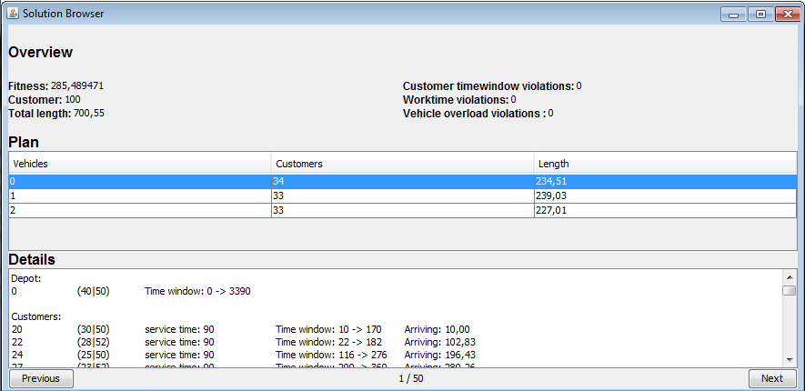

| Darstellungsformen :: Lösungs-Browser |
|
Der Lösungs-Browser ermöglicht die textliche Darstellung der generierten Lösungen (Tourenpläne) sowie die Auswahl des jeweiligen Tourenplans der generierten Lösungsvorschläge:  Die textliche Darstellung der Tourenpläne Im oberen Bereich werden Informationen zu dem aktuell ausgewählten Tourenplan aufgelistet:
Im unteren Bereich können die errechneten Tourenpläne mit den zwei Buttons durchgeschaltet werden. Die Anzeige zwischen den Buttons gibt den zur Zeit ausgewählten Tourenplan und die Anzahl von erstellten Tourenplänen an. |